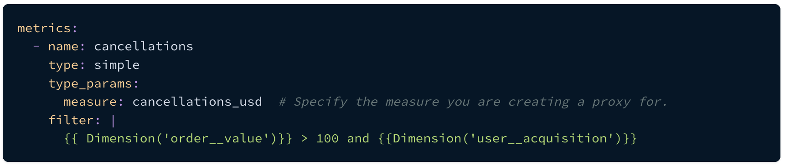
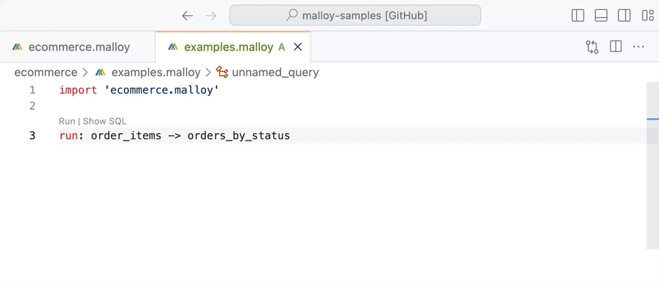
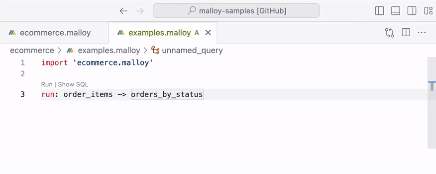

All Posts
All Posts
The easy thing is not always the right thing
November 6, 2023 by Carlin Eng
Many commercial implementations of semantic layers are built using YAML, a “human-readable” data serialization format often used for configuration files. Because of its superficial readability, at first it may seem like the natural choice. It’s also relatively easy to start building a semantic layer using YAML, so it’s a quick path to get a product to market. However, taking this shortcut shifts the burden to users and creates a poor developer experience. In this post, I’ll lay out the reasons why, and explain why the Malloy team believes that a real semantic layer needs a full-fledged programming language.
YAML was designed to create human-readable configuration files. When writing YAML configuration in an IDE, the editing environment sees input fields as simple text strings. This means the IDE cannot validate the contents of the configuration. Parsing and validation is usually passed off to some external program that lives outside of the IDE, and can take several seconds to run to completion. Unfortunately, users oftentimes need to write complex expressions in these configurations, and since the IDE has no knowledge of what those expressions can or cannot contain, those users are trapped in a vicious loop of guessing the correct syntax, leaving the IDE to run a validation script, trying to interpret any resulting error messages, and returning back to the IDE to try to fix their syntax. For cognitively demanding tasks like data modeling, fast feedback loops are absolutely critical, and this disjointed experience is crippling. The Malloy team experienced these limitations firsthand when they initially built LookML back in 2012 as a domain-specific language (DSL) on top of YAML. It’s one of the many lessons they took to heart when creating Malloy.
Let’s look at a concrete example of this problem by inspecting a metric definition from another YAML-based semantic layer solution:
In this example, the logic for the filter field is fairly simple, but the correct syntax is quite complex. The field takes an expression where some values are enclosed in double-curlies, and those values have their own parenthesized subexpressions. Until you run a validation command, you have no idea if this is the correct syntax, or if you’ve referenced a non-existent field. Errors in this semantic data model can come from one of 3 totally separate languages:
YAML: these errors show up in the IDE, and are easy to fix
Semantic Model DSL: you need to explicitly run your DSL’s compilation program to see the problem. Maybe it’s a syntax error, maybe it’s an undefined field.
SQL: semantic model DSLs typically contain SQL fragments, and the only way to test these is to run or compile the query.
Modern programming environments don’t work this way. When someone writes syntactically invalid Javascript or Python code, they get immediate feedback from the IDE. Features like “jump to reference” or “peek at definition” allow developers to quickly explore a codebase and understand how complex components work together. By implementing a real programming language, instead of just a configuration DSL, Malloy offers this same functionality. In Malloy, when you type an invalid expression (either because the syntax isn’t correct, or because the object you’re referencing doesn’t exist), you get instantaneous feedback:
When reading someone else’s query that uses complex dimensions or measures, it’s a single click to see exactly how those objects are defined:
This doesn’t come for free. Writing a real compiler is a complex undertaking that requires a lot of hard work, knowledge, and skill. However, we believe it’s 100% worth the effort. Just like programming, data modeling and exploration is a very cognitively demanding process, and cognitively demanding processes benefit tremendously from fast feedback loops. At the Malloy team, we’re trying as hard as we can to ensure that data modelers and analysts can achieve “flow state” while doing their work. This means doing hard things, and sweating every tiny detail that causes friction in the experience.
To learn more about Malloy, and experience the power of a semantic layer implemented as full programming language, check out our documentation, and make sure to join our Slack community to introduce yourself and join the conversation!